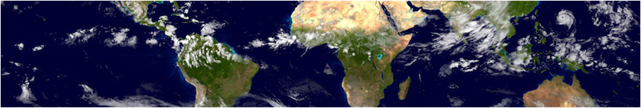

UPCOMING YCEI WORKSHOP
Tropical extremes:
A workshop on high-impact weather events in monsoon regions
Organizer: William R. Boos, Department of Geology and Geophysics
Sponsored by the
Yale Climate and Energy Institute
and the
Edward J. and Dorothy Clarke Kempf Fund at Yale's MacMillan Center

April 16–17, 2015
| 8:30 am – 5:00 pm
Kline Geology Lab Room 102, 210 Whitney Avenue, New Haven, CT
Monsoons are seasonal, continental-scale atmospheric circulations that deliver water to billions of people in Africa, South Asia, Australia, and the tropical Americas. Monsoon variability is of great societal importance, and the most severe impacts come from extreme events such as intense storms or prolonged drought. For example, floods associated with storms called monsoon depressions killed hundreds to thousands of people in South Asia in four of the past seven years.
Despite the importance of monsoon rainfall, there is no established theory that explains the observed variability of monsoons, and the computer models that forecast short-term weather and long-term climate struggle with accuracy in the tropics. Furthermore, the scientific community that studies monsoons is fragmented, with the African, Asian, Australian, and American monsoons each studied by largely separate groups of researchers. Communication and evaluation of monsoon forecasts is similarly fragmented, with some regions having well-developed meteorological services while others lack even routine monitoring of current precipitation.
This workshop will convene a group of leaders with expertise in the fundamental science, prediction, and social impacts of climate extremes in monsoon regions. Science foci include:
- Asian-Australian monsoon depressions
- African easterly waves
- Summertime intraseasonal variability, such as the Madden-Julian Oscillation
A concrete goal of the workshop is to foster collaboration on projects aimed at improving observations, predictions, and understanding of extreme transient events in monsoon regions. A more general goal is to enhance dialogue between the research, forecast, and social impacts communities, and between specialists in different geographic regions.
Day 1: Overview of monsoon variability in Asia, Australia, Africa, and North America; Asian monsoon variability
Day 2: Monsoon depressions; New observational and theoretical tools; Future directions
Agenda, Day 1 – Thursday, April 16, 2015
Overview of monsoon variability in Asia, Australia, Africa, and North America
8:30 am Welcome & Overview of Asian monsoon variability
William Boos, Yale University
Billions of people living in the monsoon climates of Asia, Australia, and Africa are highly vulnerable to floods and droughts. Extreme rainfall in these regions is often caused by large (2000 km in diameter) propagating vortices that are neither typhoons or classical extratropical storms. This talk will provide a brief overview of extreme events and short-term (5-7 day) variability in monsoons in the particular context of Asia.
9:15 am African monsoon synoptic-scale variability
Chris Thorncroft, SUNY Albany
From a large-scale perspective the West African monsoon (WAM) can be described in terms of the annual march of the ITCZ and its associated regional circulations. On the synoptic and mesoscale, the WAM is comprised of a complex collection of wave patterns, organized weather systems and convection. These include synoptic systems such as African easterly waves (AEWs) and mesoscale convective systems (MCSs), the main rain-producers in the region. AEWs also initiate many of the Atlantic tropical cyclones (TCs) downstream and thus are an important part of the interactions that take place between West Africa and the tropical Atlantic. The talk will review what we know about AEWs and highlight some important research issues. It will include discussion of key aspects that relate to three phases of the observed AEW life-cycle namely: (i) genesis, (ii) baroclinic development and (iii) West coast developments including how this relates to downstream tropical cyclogenesis. The talk will also include some discussion about the interactions between AEWs and Convectively Coupled Kelvin Waves.
10:00 am Australian monsoon depressions
Gareth Berry, Monash University
Synoptic scale weather systems are frequently observed in monsoon systems and are intimately linked to disturbed local weather conditions. Perhaps the best documented synoptic systems are African Easterly Waves and monsoon lows over the Indian subcontinent, both of which are important organizers of rainfall in their respective regions. Monsoon depressions are also found within the Australian monsoon system during Austral summer, although they have received considerably less attention than their African and Indian counterparts in the literature.
The majority of past studies concerned with Australian disturbances are focused on particular high impact cases or analysis using spectral techniques. In this presentation recent research concerned with Australian monsoon depressions will be summarized. Using feature tracking and synoptic composites, it will be shown that monsoon depressions are a regular feature of the summertime monsoon and that they are an important contributor to the total monsoon rainfall, especially extreme rainfall events. The development of these disturbances will be discussed and it be highlighted that although most Australian depressions develop in the tropics via diabatic processes, a significant number are linked with extratropical interaction via Rossby wave breaking and midlatitude fronts over Australian continent.
10:45 am Break
11:15 am Synoptic-scale variability in the North American Monsoon:
Gulf surges, their impact on monsoon precipitation, and their modulation by tropical and extratropical waves
Simona Bordoni, Caltech
The majority of past studies concerned with Australian disturbances are focused on particular high impact cases or analysis using spectral techniques. In this presentation recent research concerned with Australian monsoon depressions will be summarized. Using feature tracking and synoptic composites, it will be shown that monsoon depressions are a regular feature of the summertime monsoon and that they are an important contributor to the total monsoon rainfall, especially extreme rainfall events. The development of these disturbances will be discussed and it be highlighted that although most Australian depressions develop in the tropics via diabatic processes, a significant number are linked with extratropical interaction via Rossby wave breaking and midlatitude fronts over Australian continent.
12:00 pm Discussion
12:30 pm LUNCH
Asian monsoon variability
2:00 pm A potential vorticity perspective on South Asian monsoon variations
Sebastian Ortega, Georgia Tech
The mean 370K isentropic potential vorticity field during the South Asian monsoon is a large anticylonic structure centered on the Himalayan-Tibetan plateau, extending across Africa to the west and the central Pacific Ocean on the east and culminating in a strong trough extending southwards to the equator. We present a link between perturbations in this mean isentropic potential vorticity field and lower level atmospheric variability over South Asia. The link is observed on the 10-day timescale, and might help explain some of the lower level synoptic variability occurring during different phases of the South Asian monsoon. We find that positive upper level PV anomalies are associated with suppressed convection immediately below and that these PV anomalies seem to lead the lower level response.
Composites analysis of the upper level fields reveal that the PV anomalies are the result of Rossby wave breaking events occurring over the Pacific Ocean. In these composites, mid-latitude Rossby waves are seen first to propagate eastward as ridges on the PV field against the background anticyclonic circulation. These ridges later stretch and break over the Pacific Ocean, and the remaining PV is advected across South Asia. Further, vertical cross-sections reveal a clear association between the upper level PV anomalies and moisture, geopotential, and temperature anomalies throughout the troposphere. These anomalies seem consistent with the ideas of PV inversion, and lead to the hypothesis that the upper level fields induce lower level responses. We explore the validity of this hypothesis and its consequences for lower level fields within the 10 day timescale.
2:20 pm Land-atmosphere controls on South Asian monsoon dynamics
in General Circulation Models
Moet Ashfaq, Oak Ridge National Lab
Accurate simulation of the South Asian summer monsoon is still an unresolved challenge. There has not been a benchmark effort to decipher the origin of undesired yet virtually invariable unsuccessfulness of General Circulation Models (GCMs) over this region. Here we analyze a large ensemble (~50) of CMIP5 GCMs to show that most of the simulation errors in the precipitation distribution and their driving mechanisms are systematic and of similar nature across the GCMs, with biases in meridional differential heating over South Asia playing a critical role in determining the timing of monsoon onset over land, the magnitude of seasonal precipitation distribution and the trajectories of monsoon depressions. We find that the rate of meridional differential heating in CMIP5 models is significantly affected by the magnitude of latent heat flux over the slopes of the Himalayas during the pre-monsoon and monsoon season. First, most of the CMIP5 GCMs spring season precipitation is predominantly distributed north of the 3500 meters elevation belt, in contrast to the observed precipitation that is predominantly distributed between 500 and 3500 meters elevation belt. This leads to excessive spring season snow and lower-than-normal latent heat flux. Second, the delayed reversal of the meridional temperature gradient in the troposphere inhibits the timely arrival of monsoon precipitation over the north-northwestern South Asia, which does not allow GCMs to reach the observed strength of differential heating during the summer season. Further, by conducting a set of low- and high-resolution GCM experiments, we demonstrate that resolution is not necessarily a main driver in the exhibition of such errors over the complex South Asian topography. Our results highlight the importance of previously less known mechanisms that critically influence the strength of the South Asian summer monsoon in the GCMs and highlights the importance of topographic controls on land-atmosphere interactions in South Asian summer monsoon.
2:40 pm Monsoon preparedness, hydropower, and environmental planning:
the policy imperative for Sino-Pakistan cooperation
Nadia Ahmad, Pace University
“We can create a more sustainable, cleaner and safer world by making wiser energy choices.”
- Robert Alan Silverstein
Silverstein’s statement highlights the role of energy in creating an ecologically-secure and conflict-reduced planet. To illustrate this point, Pakistan remains in an extremely precarious position as the country inches closer and closer to the choke point of its twin crises: energy and water. The situation in northern Pakistan is especially uncertain as a result of the heavy monsoon flooding that drenched its Himalayan foothills, valleys, and surrounding terrain on September 3, 2014. According to the World Bank, Pakistan is one of the most water stressed countries in the world, but at times there is too much water due to intense flooding. This article will discuss concerns related to water scarcity, flood control, environmental planning, and energy access and then propose solutions, suggesting policy imperatives for Pakistan’s government to improve urban and rural infrastructure at the national, subnational, and local levels. The notion of water scarcity itself is critical because it influences the views of users and policymakers on the urgency to address the water crisis along with their views on the most effective policies to address the water crisis.
The dilemma of being a water-stressed country subject to ongoing flooding presents tremendous challenges for land use, urban planning, environmental management, and natural resource conservation. While Pakistan has abundant “physical water” as is evident by the floods of the last decade, it is the “economic water” which is becoming increasingly scarce. This is a result of poor water governance by successive Pakistani governments combined with such factors as interprovincial discord, lack of awareness towards efficient use of water, maladministration, and the gradual degradation of the existing water infrastructure. The water-energy crisis which has plagued the Pakistani economy and society at large during the last decade is a corollary of the economic water scarcity in the country. In the absence of viable and sustainable alternative energy sources, Pakistan remains dependent on hydroelectricity to meet its energy requirements.
An assessment of the water-energy nexus in Pakistan considers the ramifications of land use and urban planning in river communities, particularly during the monsoon season. Pakistan’s water policy in relation to dam-building projects is analyzed, and it is argued that hydroelectricity is still a better, and in some cases the only, energy source for various remote mountainous areas, rural farmland, and the communities located along river banks in Pakistan. It is further asserted that strengthening Sino-Pakistan relations through investment and innovation will be crucial for improving infrastructure and developing a regional policy for resiliency and renewable energy deployment.
3:00 pm Discussion
3:30 pm Break
4:00 pm Asian monsoon intraseasonal extreme events and their prediction
Bin Wang, University of Hawaii
Tropical Intraseasonal variability (ISV) represents a primary source of predictability at time scales in between weather and seasonal climate variations. With growing evidences of the MJO modulations to extreme weather events, efforts to develop and improve sub-seasonal prediction have been a focus of intense research over the past two decades. Over the past decade, dynamical prediction and predictability study of Madden-Julian Oscillation (MJO) have made rapid progress. In this presentation, assessments of the practical and potential MJO prediction capabilities from dynamic models are reviewed. In particular the assessment uses the Intraseasonal Variability Hindcast experiment (ISVHE). ISVHE is multi-model experiment consisting of set of extended range hindcasts from eight different coupled models. Specifically, we present our studies’ findings regarding boreal winter Madden-Julian Oscillation (MJO), and the boreal summer intraseasonal Oscillation (BSISO). Predictability and prediction skill are estimated using the signal-to-error ratio method and the multi-model ensemble-mean hindcasts, with an emphasis on quantifying the gap between prediction skill and estimates of predictability for the dominant (most predictable) modes of MJO/BSISO. In addition, the impact of atmosphere-ocean interaction on ISV predictability is also discussed using a coupled climate model. Specific attention is placed on analysis of the relationship between the dispersion of ensemble members and the ensemble mean prediction skills, illustrating how the fidelity of the combined model, assimilation system and structural fidelity of existing ensemble prediction systems influence our prediction capabilities of ISV.
5:00 pm Reception (refreshments in KGL lobby)
Agenda, Day 2 – Friday, April 17, 2015
8:45 am Opening and recap of day 1
William Boos, Yale University
Monsoon depressions
9:00 am Two scales of monsoon depressions during the South Asia monsoon
George Kiladis, NOAA
Monsoon depressions affecting South Asia have been well documented in hundreds of past studies, however it does not appear that the range of scales of these disturbances have been documented systematically. Cross spectral and Principal Component Analysis is applied to satellite brightness temperature along with ECMWF ERA Interim data to isolate the preferred periods and horizontal structures of westward propagating cyclones over southern Asia during boreal summer. In order to remove the large signal of intraseasonal variability associated with the Boreal Summer Intraseasonal Oscillation (BSISO), along with the diurnal cycle, we first filter brightness temperature data for submonthly timescales using a 2-30 day bandpass. These data are then subjected to an EOF analysis for the June-August period 1979-2013 over the region 20S-20N, 40E-160E. The disturbances isolated are extremely robust to changes in the filtering down to a 20 day cutoff, with identical results obtained from a global 20S-20N EOF analysis as well. Two different disturbance types are identified. The first can be identified as the “Quasi-biweekly” mode that has been studied both over South Asia and in other monsoon regions. These cyclones have a half-wavelength of around 4000 km and a pronounced cold core structure in the lower troposphere, with deep, vertically aligned potential vorticity signals extending up to 200 hPa, oppositely signed above that. The period of these waves is around 14 days, and some aspects of their structures resemble equatorial Rossby (ER) waves, although they are displaced northward and the southern gyre is typically found on the equator, especially over the Indian sector. The second type is a synoptic scale disturbance with around a 7 day period and half wavelength closer to 2000 km. These have a markedly different vertical structure than the first type, with much less pronounced cold anomalies in the lower troposphere and stronger vertical tilts in temperature. Both types of disturbances frequently originate over the western Pacific, then cross Indo-China before affecting the Indian subcontinent. Strong westward propagating Southern Hemisphere connections are also identified in the upper troposphere associated with both disturbance types.
9:20 am Relationship between mean monsoon precipitation and low
pressure systems in climate model simulations
Ajaya Ravindran, New York University – Abu Dhabi
The north north-west propagating Low Pressure Systems (LPS) are an important component of the Indian Summer Monsoon (ISM). The objective detection and tracking of LPS in reanalysis products and climate model simulations are challenging due to the weak structure of the LPScompared to tropical cyclones. A robust method is presented here to objectively identify and track LPS, which mimics the conventional identification and tracking algorithm based on detecting closed isobars on surface pressure charts. The new LPS tracking technique allows a fair comparison between the observed and simulated LPS. The analysis based on the new tracking algorithm shows that the ERA interim and MERRA reanalysis were able to reproduce the observed characteristics of monsoon LPS with a fair degree of accuracy. Further, the LPS detection and tracking algorithm is applied to the climate model simulations of the Coupled Model Intercomparison Project phase five (CMIP5). The CMIP5 models show considerable spread in terms of their skill in LPS simulation. About 60% of the observed total summer monsoon precipitation over east-central India is found to be associated with LPS, while that in models this ratio varies between 5 - 60%. Those models which simulate synoptic activity realistically, are found have better skill in simulating seasonal mean monsoon precipitation. The model-to-model variability in the simulated synoptic activity is found to be linked to the intermodel spread in zonal wind shear over Indian region, which is further linked to the inadequate representation of Tropical Easterly Jet. These findings elucidate the mechanisms behind the model simulation of ISM precipitation, synoptic activity and their interdependence.
9:40 am Has the number of Indian summer monsoon depressions decreased
over the last 30 years?
Naftali Cohen , Yale University
Monsoon depressions are cyclonic atmospheric vortices with outer radii near 1000 km that form within the larger-scale monsoon circulations of India and other regions. Recent studies have reported a downward trend in recent decades in the number of Indian summer monsoon depressions. In particular, the years 2002, 2010, and 2012 were noted for having the first summers, in over a century, in which no depressions formed. Here satellite and reanalysis data are used to document the existence of multiple storms in the summers of 2002, 2010, and 2012 that meet traditional criteria for classification as monsoon depressions. Furthermore, the number of extreme synoptic events occurring each summer over the Bay of Bengal is estimated from satellite scatterometers and exhibits no statistically significant trend over the last three decades. These results raise questions about the validity of previously claimed large trends in monsoon depression activity in the Indian summer monsoon.
10:00 am Discussion
10:30 am Break
New observational and theoretical tools
11:00 am A single-column modeling framework for investigating the interaction
between cumulus convection and large-scale dynamics at middle latitudes
Ji Nie , Columbia University
In traditional theoretical studies of mid-latitude dynamics, the effects of cumulus convection usually are oversimplified by convective parameterizations. It may lead to insufficient interactions between cumulus convection and large-scale dynamics, especially for events with heavy precipitation. We propose a new modeling framework for investigating such interactions: it simulates the atmospheric states and cumulus convection of a local air column using a single column model (or a cloud resolving model), while parameterizes the large-scale dynamics by the quasi-geostrophic omega equation. The dependence of the interactions on horizontal wavelength is explored under different advective forcing. As an example, the framework is applied on the Pakistan flood events, showing that it is a useful tool to separate the triggering mechanisms of the extreme precipitation events.
11:20 am An introduction to spatio-temporal wavelet transform and
its application to tropical convection
Kazuyoshi Kikuchi , University of Hawaii
Organized deep convection in the tropics usually occurs in association with various types of equatorially trapped large-scale atmospheric wave motions (collectively and commonly referred to as convectively coupled equatorial waves, CCEWs). They play significant roles in tropical weather and climate such as cyclogenesis and being among the major building blocks of the climatological intertropical convergence zone and the Madden-Julian oscillation. Given that they follow the theoretically expected dispersion curves derived by Matsuno, it is effective in detecting and identifying individual CCEWs in the spectral space. Over the last few decades spectral methods based on the Fourier transform (FT) have been established for that purpose. Those methods, however, have limitations in documenting the nonstationary and nonhomogeneous features of the CCEWs. The statistical properties of the CCEWs, in fact, vary on various timescales such as annual, intraseasonal, and interannual. In order to overcome the limitations, we introduced a new method, called the spatio-temporal wavelet transform (STWT), for interrogating the CCEWs. The STWT is a two-dimensional version of the wavelet transform and is able to provide both spatially and temporary localized spectral information, enabling us to describe the geographically and temporary varying features of the CCEWs. Rigorous checks indicate that the STWT spectra are reasonable estimates in the sense that their space-time average is consistent with the spectral estimate of a conventional FT-based method. It is expected that the STWT provides a useful means of examining the CCEWs in great detail. In this talk, I will introduce the method and present some recent progress that includes results on DYNAMO.
11:40 am Seeing the monsoon intraseasonal oscillation and other anomalies
amidst the messy mean monsoon
Brian Mapes , University of Miami
12:00 pm Discussion
12:30 pm LUNCH
Future directions
2:00 pm Extreme events in monsoon regions: a panel discussion on open questions
Gareth Berry, Simona Bordoni, Chris Thorncroft, and Bin Wang
3:00 pm Break
3:30 pm Planning session for future work and collaborations
5:00 pm Closing remarks
William Boos, Yale University
Registration
Registration is required, at no cost, to assure adequate space and food for attendees. Please register using
this form.
Getting to Yale
New Haven can be reached from several airports: Laguardia and JFK are about 1.5 hours away by car, while Newark is almost 2 hours by car. Traffic can increase these travel times substantially. Bradley airport in Hartford, CT is another option, and Tweed airport in New Haven is a small airport with flights to and from Philadelphia. New Haven is on the Amtrak line that runs between Boston and New York City, and it is also connected with Manhattan by the MetroNorth commuter rail.